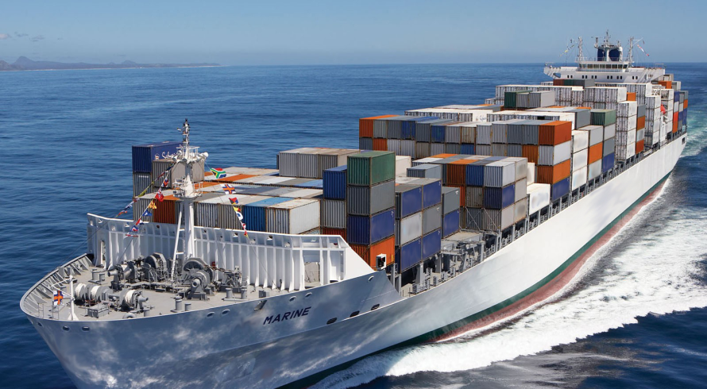
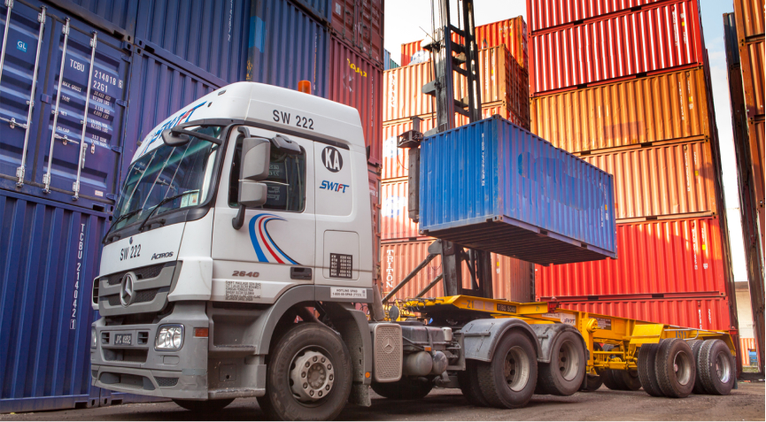

Разрешение споров из международных (внешнеторговых) контрактов.
Под международным контрактом понимается сделка между двумя или более сторонами, находящимися в разных странах, по купле-продаже или поставке товара, выполнению работ или оказанию услуг или иным видам хозяйственной деятельности в соответствии с согласованными сторонами условиями.
Заключая такой контракт стороны могут выбрать на случай возникновения из него споров:
- Применимое материальное право (в его отсутствие применяются нормы международных соглашений, а в их отсутствие если одной из сторон сделки является резидент РФ и спор рассматривается российским арбитражом применяются коллизионные нормы глав 67, 68 ГК РФ). Стороны могут указать в контракте как материальное право, применяемое при разрешении споров, так и коллизионное право определенной страны, на основании которого определяется такое применимое материальное право.
- Суд, имеющий компетенцию рассматривать конкретный спор из контракта (об его толковании, заключенности, действительности, изменении, исполнении и прекращении). Стороны могут в контракте передать спор, обычно подсудный по месту нахождения ответчика, в компетентный суд иностранного государства (пророгационным соглашением) или исключить этот спор из компетенции российских арбитражей (дерогационным соглашением).

Основным документом, разрешающим подобные коллизии о выборе материального права, является «Венская конвенция о праве международных договоров» (Вена, 23.05.1969).
Другими международными соглашениями, содержащими коллизионные нормы, являются Соглашение стран СНГ от 20.03.1992 «О порядке разрешения споров, связанных с осуществлением хозяйственной деятельности», Конвенция о правовой помощи и правовых отношениях по гражданским, семейным и уголовным делам (Минск, 22.01.1993) и т.д.
По общему правилу, специальные нормы международного договора подлежат приоритетному применению по отношению к общим нормам другого международного договора независимо от количества участников соответствующих международных договоров и дат их принятия, если нормами таких международных договоров не установлено иное.
Если ни один международный договор, в чью сферу действия входит гражданско-правовое отношение, не содержит применимой коллизионной нормы по определенному вопросу, российский арбитраж руководствуется коллизионной нормой российского законодательства (абз. 3, 4 п. 4 постановления Пленума Верховного Суда РФ от 09.07.2019 № 24, далее – Пленум № 24).
При этом российский арбитраж применяет к спорным правоотношениям российские нормы непосредственного применения независимо от того, каким правом регулируется это отношение в силу соглашения сторон о выборе применимого права или коллизионных норм, если сфера действия такой нормы охватывает спорное правоотношение (п. 1 ст. 1192 ГК РФ).
Под нормами непосредственного действия понимаются только такие императивные нормы, которые вследствие указания в них самих или ввиду их особого значения, в том числе для обеспечения прав и охраняемых законом интересов участников гражданского оборота, регулируют соответствующие отношения независимо от подлежащего применению права.
В части, не урегулированной нормами непосредственного применения, не исключается применение к спорным правоотношениям права, определенного в соответствии с соглашением сторон о выборе применимого права или коллизионными нормами (п. 10, 11 Пленума № 24).
Пророгационное соглашение заключено, в частности, если оно составлено в виде отдельного соглашения, оговорки в договоре либо такое соглашение достигнуто путем обмена письмами, телеграммами, телексами, телефаксами и иными документами, включая электронные документы, передаваемые по каналам связи, позволяющим достоверно установить, что документ исходит от другой стороны.
Пророгационное соглашение также считается заключенным в письменной форме, если оно совершается путем обмена процессуальными документами (в том числе исковым заявлением и отзывом на исковое заявление), в которых одна из сторон заявляет о наличии пророгационного соглашения, а другая против этого не возражает (абз. 3, 4 п. 6 постановления Пленума Верховного Суда РФ от 27.06.2017 № 23, далее – Пленум № 23).
Вместо конкретного суда стороны в пророгационном соглашении вправе выбрать определенный международный коммерческий арбитраж.
При выборе российского арбитража необходимо помнить, что пророгационное соглашение не может изменять правила о внутригосударственной подсудности дел судам общей юрисдикции и арбитражным судам Российской Федерации (абз. 6 п. 6 Пленума № 23).
Также пророгационное или дерогационное соглашение не может изменять исключительную компетенцию российских арбитражей (п. 7 Пленума № 23).
Недействительность и (или) незаключенность контракта сами по себе не влекут за собой недействительности и неисполнимости пророгационного соглашения.
В случае истечения срока действия контракта пророгационное соглашение сохраняет силу (п. 10 Пленума № 23).

В настоящее время существуют две основные разновидности международного коммерческого арбитража:
- Институциональный арбитраж (institutional arbitration) — арбитражное производство под эгидой постоянно действующей арбитражной организации (института) и по правилам, ею разработанным;
- Арбитраж ad hoc — арбитражное производство по правилам, не связанным ни с какой арбитражной организацией (к примеру, по Арбитражному регламенту ЮНСИТРАЛ или по регламенту, разработанному сторонами).
Среди арбитражных институтов наиболее известными и авторитетными являются:
- Международный арбитражный суд (International Court of Arbitration, www.iccwbo.org) при Международной торговой палате, находится в Париже. ICC это возможно, наиболее известный и опытный среди международных арбитражных институтов.
- Лондонский международный арбитражный суд (London Court of International Arbitration, www.lcia.org). LCIA это основной арбитражный институт Великобритании.
- Американская арбитражная ассоциация (American Arbitration Association, www.adr.org) или Triple-A. AAA-ICDR это основной арбитражный институт США.
- Арбитражный институт Торговой палаты Стокгольма (Arbitration Institute of the Stockholm Chamber of Commerce, aka SCC Institute, www.sccinstitute.com)
- Китайская комиссия по международному экономическому и торговому арбитражу (China International Economic and Trade Arbitration Commission, www.cietac.org) CIETAC это центральный арбитражный институт КНР.
- Сингапурский международный арбитражный центр или SIAC (www.siac.org.sg)
- Гонконгский международный арбитражный центр или HKIAC (www.hkiac.org)
Кроме того, существенное значение при оформлении российским резидентом паспорта валютной сделки (с указанием момента оплаты российским резидентом импорта или получении им валютной выручки за экспорт) играют какие базисы поставки выбраны сторонами контракта, на что отмечено в Постановлении Президиума ВАС РФ от 14 июня 2011 г. № 2723/11.
Одновременно, базис поставки помимо момента исполнения обязательства по оплате груза также определяет момент исполнения обязательства по передаче груза, в связи с чем место исполнения таких обязательств может определять альтернативную подсудность спора российскому арбитражу, на что указано в Определении Верховного Суда Российской Федерации от 21.01.2020 № 305-ЭС19-12690.
Базисами поставки согласно Инкотермс-2020 являются ( https://anvay.ru/incoterms-2020 ):
- EXW (отгрузка на условиях «Франко завод»), т.е. на условиях самовывоза
- FCA (основная перевозка оплачена покупателем на условиях «Франко перевозчик/ Свободный перевозчик»), т.е. продавец исполняет свои обязательства по внешнеторговому контракту, когда передаёт в распоряжение покупателю продукцию, загруженную на определённое транспортное средство в заранее указанном месте и выпущенную таможней в рамках процедуры экспорта (также уплачиваются вывозные пошлины и сборы, если это необходимо). При этом импортное таможенное оформление остаётся обязанностью покупателя.
- FOB (основная перевозка оплачена покупателем на условиях «Свободно на борту»), т.е. продавец исполняет свои обязательства по внешнеторговому контракту, когда передаёт в распоряжение покупателю продукцию, размещённую на борту речного или морского судна и выпущенную таможней в рамках процедуры экспорта (также уплачиваются вывозные пошлины и сборы, если это необходимо). При этом импортное таможенное оформление остаётся обязанностью покупателя.
- CFR (основная перевозка оплачена продавцом на условиях «Стоимость и фрахт»), т.е. продавец исполняет свои обязательства по внешнеторговому контракту, когда передаёт в распоряжение покупателя продукцию, размещённую на судовом борту и выпущенную таможней в рамках процедуры экспорта (также уплачиваются вывозные пошлины и сборы, если это необходимо). При этом фрахт оплачивается продавцом, а импортное таможенное оформление и разгрузка при прибытии остаётся обязанностью покупателя.
- CIF (основная перевозка оплачена продавцом на условиях «Стоимость, страхование и фрахт»), т.е. продавец исполняет свои обязательства по внешнеторговому контракту, когда передаёт в распоряжение покупателя заранее застрахованную продукцию, размещённую на судовом борту и выпущенную таможней в рамках процедуры экспорта (также уплачиваются вывозные пошлины и сборы, если это необходимо). При этом фрахт оплачивается продавцом, а импортное таможенное оформление и разгрузка при прибытии остаётся обязанностью покупателя.
- CIP (основная перевозка оплачена продавцом на условиях «Фрахт/перевозка и страхование оплачены до»), т.е. продавец исполняет свои обязательства по внешнеторговому контракту, когда передаёт в распоряжение перевозчика заранее застрахованную продукцию, выпущенную таможней в рамках процедуры экспорта (также уплачиваются вывозные пошлины и сборы, если это необходимо). При этом транспортировка до назначенного пункта, возможные расходы, связанные с транзитом по территории иностранного государства, оплачивается продавцом, а импортное таможенное оформление и разгрузка при прибытии остаётся обязанностью покупателя. В процессе транспортировки может возникнуть ситуация, при которой из-за задержки импортного оформления товарной партии, груз будет размещён на платных таможенных складах. Расходы по оплате складов также ложатся на продавца.
- DAP (доставка на условиях «Поставка в место назначения»), т.е. продавец исполняет свои обязательства по внешнеторговому контракту, когда передаёт в распоряжение покупателя продукцию готовую к выгрузке в назначенном пункте и выпущенную таможней в рамках процедуры экспорта (также уплачиваются вывозные пошлины и сборы, если это необходимо). При этом транспортировка до назначенного пункта, возможные расходы, связанные с транзитом по территории иностранного государства и оплатой таможенных складов в случае задержек оформления, оплачивается продавцом, а импортное таможенное оформление и разгрузка при прибытии остаётся обязанностью покупателя.
- DPU (доставка на условиях «Поставка на место выгрузки»), т.е. продавец исполняет свои обязательства по внешнеторговому контракту, когда передаёт в распоряжение покупателя продукцию, выгруженную в назначенном пункте и прошедшую экспортное таможенное оформление (также уплачиваются вывозные пошлины и сборы, если это необходимо).
- DDP (доставка на условиях «Поставка с оплатой пошлины»), т.е. продавец исполняет свои обязательства по внешнеторговому контракту, когда передаёт покупателю продукцию, готовую к выгрузке в назначенном пункте и прошедшую оформление в таможне как при вывозе, так и при ввозе. При этом стоимость транспортировки до назначенного места, все возможные расходы, связанные с прохождением таможни в обеих странах, транзитом по территории иностранного государства, оплата таможенных складов в случае задержек оформления оплачивается продавцом. Только разгрузка при прибытии остаётся обязанностью покупателя (если и она не переложена на продавца в рамках внешнеторгового договора). Все риски до момента передачи товарной партии для разгрузки покупателю в назначенном пункте несёт продавец.

Более подробно базисы поставки обсудим в следующих статьях.
Содержание статьи:
исковое заявление за 999 руб.
судебный приказ за 339 руб.
по ст. 395 ГК РФ